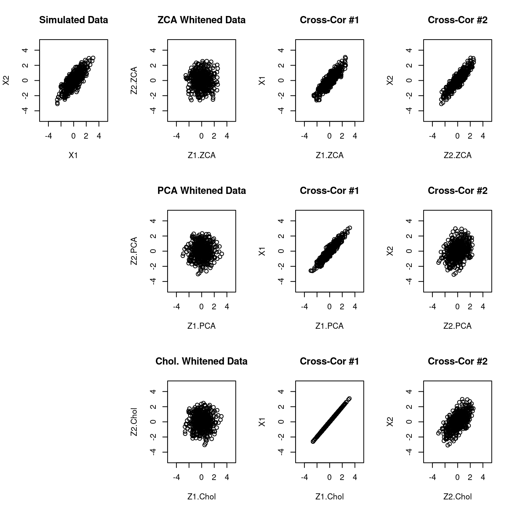
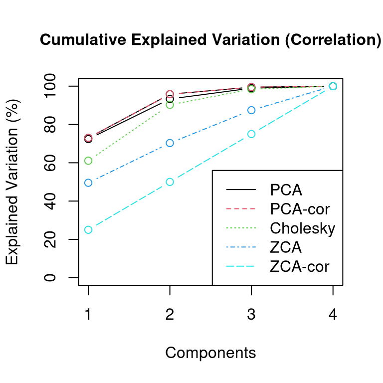
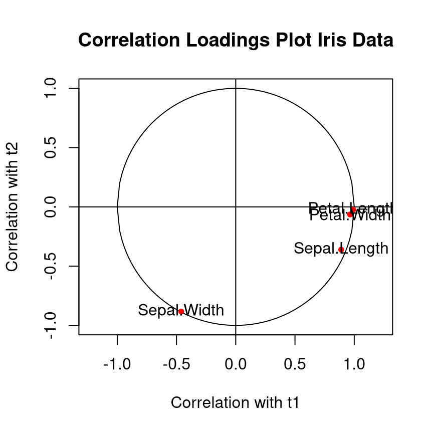

3 Transformations and dimension reduction
In the following we study transformations of random vectors and their distributions. These transformation are very important since they either transform simple distributions into more complex distributions or allow to simplify complex models. Futhermore, they enable dimension reduction. We first consider affine transformation, and then also nonlinear transformations.
3.1 Linear Transformations
Location-scale transformation
Also known as affine transformation.
\[\boldsymbol y= \underbrace{\boldsymbol a}_{\text{location parameter}}+\underbrace{\boldsymbol B}_{\text{scale parameter}} \boldsymbol x\space\] \[\boldsymbol y: m \times 1 \text{ random vector}\] \[\boldsymbol a: m \times 1 \text{ vector, location parameter}\] \[\boldsymbol B: m \times d \text{ matrix, scale parameter }, m \geq 1\] \[\boldsymbol x: d \times 1 \text{ random vector}\]
Mean and variance:
Mean and variance of the original vector \(\boldsymbol x\):
\[\text{E}(\boldsymbol x)=\boldsymbol \mu_{\boldsymbol x}\] \[\text{Var}(\boldsymbol x)=\boldsymbol \Sigma_{\boldsymbol x}\]
Mean and variance of the transformed random vector \(\boldsymbol y\):
\[\text{E}(\boldsymbol y)=\boldsymbol a+ \boldsymbol B\boldsymbol \mu_{\boldsymbol x}\] \[\text{Var}(\boldsymbol y)= \boldsymbol B\boldsymbol \Sigma_{\boldsymbol x} \boldsymbol B^T\]
Cross-covariance and cross-correlation:
Cross-covariance \(\boldsymbol \Phi= \Sigma_{\boldsymbol x\boldsymbol y} = \text{Cov}(\boldsymbol x, \boldsymbol y)\) between \(\boldsymbol x\) and \(\boldsymbol y\): \[ \boldsymbol \Phi= \text{Cov}(\boldsymbol x, \boldsymbol B\boldsymbol x) = \boldsymbol \Sigma_{\boldsymbol x} \boldsymbol B^T \] Note that \(\boldsymbol \Phi\) is a matrix of dimensions \(d \times m\) as the dimension of \(\boldsymbol x\) is \(d\) and the dimension of \(\boldsymbol y\) is \(m\).
Cross-correlation \(\boldsymbol \Psi= \boldsymbol P_{\boldsymbol x\boldsymbol y} = \text{Cor}(\boldsymbol x, \boldsymbol y)\) between \(\boldsymbol x\) and \(\boldsymbol y\): \[ \boldsymbol \Psi= \boldsymbol V_{\boldsymbol x}^{-1/2} \boldsymbol \Phi\boldsymbol V_{\boldsymbol y}^{-1/2} \] where \(\boldsymbol V_{\boldsymbol x} = \text{Diag}(\boldsymbol \Sigma_{\boldsymbol x})\) and \(\boldsymbol V_{\boldsymbol y} = \text{Diag}(\boldsymbol B\boldsymbol \Sigma_{\boldsymbol x} \boldsymbol B^T)\) are diagonal matrices containing the variances for the components of \(\boldsymbol x\) and \(\boldsymbol y\). The dimensions of the matrix \(\boldsymbol \Psi\) are also \(d \times m\).
Special cases/examples:
Example 3.1 Univariate case (\(d=1, m=1\)): \(y=a + b x\)
- \(\text{E}(y)=a+b\mu\)
- \(\text{Var}(y)=b^2\sigma^2\)
- \(\text{Cov}(y, x) = b\sigma^2\)
- \(\text{Cor}(y, x) = \frac{b \sigma^2}{\sqrt{b^2\sigma^2} \sqrt{\sigma^2} } =1\)
Note that \(y\) can predicted perfectly from \(x\) as \(\text{Cor}(y, x)=1\). This is because there is no error term in the transformation. See also the more general case with multiple correlation further below.
Example 3.2 Sum of two random univariate variables: \(y = x_1 + x_2\), i.e. \(a=0\) and \(\boldsymbol B=(1,1)\)
- \(\text{E}(y) = \text{E}(x_1+x_2)=\mu_1+\mu_2\)
- \(\text{Var}(y) = \text{Var}(x_1+x_2) = (1,1)\begin{pmatrix} \sigma^2_1 & \sigma_{12}\\ \sigma_{12} & \sigma^2_2 \end{pmatrix} \begin{pmatrix} 1\\ 1 \end{pmatrix} = \sigma^2_1+\sigma^2_2+2\sigma_{12} = \text{Var}(x_1)+\text{Var}(x_2)+2\,\text{Cov}(x_1,x_2)\)
Example 3.3 \(y_1=a_1+b_1 x_1\) and \(y_2=a_2+b_2 x_2\), i.e. \(\boldsymbol a= \begin{pmatrix} a_1\\ a_2 \end{pmatrix}\) and
\(\boldsymbol B= \begin{pmatrix}b_1 & 0\\ 0 & b_2\end{pmatrix}\)
- \(\text{E}(\boldsymbol y)= \begin{pmatrix} a_1\\ a_2 \end{pmatrix} + \begin{pmatrix}b_1 & 0\\ 0 & b_2\end{pmatrix}
\begin{pmatrix} \mu_1 \\ \mu_2\end{pmatrix}
= \begin{pmatrix} a_1+b_1 \mu_1\\ a_2+b_2 \mu_2 \end{pmatrix}\)
- \(\text{Var}(\boldsymbol y) = \begin{pmatrix} b_1 & 0\\ 0 & b_2 \end{pmatrix}
\begin{pmatrix}
\sigma^2_1 & \sigma_{12}\\
\sigma_{12} & \sigma^2_2
\end{pmatrix}
\begin{pmatrix} b_1 & 0\\ 0 & b_2 \end{pmatrix} =
\begin{pmatrix}
b^2_1\sigma^2_1 & b_1b_2\sigma_{12}\\
b_1b_2\sigma_{12} & b^2_2\sigma^2_2
\end{pmatrix}\)
note that \(\text{Cov}(y_1, y_2) = b_1 b_2\text{Cov}(x_1,x_2)\)
Squared multiple correlation
Squared multiple correlation \(\text{MCor}(y, \boldsymbol x)^2\) is a scalar measure summarising the linear association between a scalar response variable \(y\) and a set of predictors \(\boldsymbol x= (x_1, \ldots, x_d)^T\). It is defined as \[ \begin{split} \text{MCor}(y, \boldsymbol x)^2 &= \boldsymbol \Sigma_{y \boldsymbol x} \boldsymbol \Sigma_{\boldsymbol x}^{-1} \boldsymbol \Sigma_{\boldsymbol xy} / \sigma^2_y\\ &=\boldsymbol P_{y \boldsymbol x} \boldsymbol P_{ \boldsymbol x}^{-1} \boldsymbol P_{\boldsymbol xy}\\ \end{split} \] If \(y\) can be perfectly linearly predicted by \(\boldsymbol x\) then \(\text{MCor}(y, \boldsymbol x)^2 = 1\).
The empirical estimate of \(\text{MCor}(y, \boldsymbol x)^2\) is the \(R^2\) coefficient that you will find in any software for linear regression.
Example 3.4 Squared multiple correlation for an affine transformation.
Since we linearly transform \(\boldsymbol x\) into \(\boldsymbol y\) with no additional error involved we expect that for each component \(y_i\) in \(\boldsymbol y\) we have \(\text{MCor}(y_i, \boldsymbol x)^2=1\). This can be shown directly by computing \[ \begin{split} \left(\text{MCor}(y_1, \boldsymbol x)^2, \ldots, \text{MCor}(y_m, \boldsymbol x)^2 \right)^T &=\text{Diag}\left(\boldsymbol \Sigma_{\boldsymbol y\boldsymbol x} \boldsymbol \Sigma_{\boldsymbol x}^{-1} \boldsymbol \Sigma_{\boldsymbol x\boldsymbol y} \right) / \text{Diag}\left( \boldsymbol \Sigma_{\boldsymbol y} \right) \\ &= \text{Diag}\left(\boldsymbol B\boldsymbol \Sigma_{\boldsymbol x} \boldsymbol \Sigma_{\boldsymbol x}^{-1} \boldsymbol \Sigma_{\boldsymbol x} \boldsymbol B^T \right) / \text{Diag}\left( \boldsymbol B\boldsymbol \Sigma_{\boldsymbol x} \boldsymbol B^T \right) \\ &= \text{Diag}\left(\boldsymbol B\boldsymbol \Sigma_{\boldsymbol x} \boldsymbol B^T \right) / \text{Diag}\left( \boldsymbol B\boldsymbol \Sigma_{\boldsymbol x} \boldsymbol B^T \right) \\ &=\left(1, \ldots, 1 \right)^T\\ \end{split} \]
Invertible location-scale transformation
If \(m=d\) (square \(\boldsymbol B\)) and \(\det(\boldsymbol B) \neq 0\) then the affine transformation is invertible.
Forward transformation: \[\boldsymbol y= \boldsymbol a+ \boldsymbol B\boldsymbol x\]
Back transformation: \[\boldsymbol x= \boldsymbol B^{-1}(\boldsymbol y-\boldsymbol a)\]
Invertible transformations thus provide a one-to-one map between \(\boldsymbol x\) and \(\boldsymbol y\).
Example 3.5 Orthogonal transformation
Setting \(\boldsymbol a=0\) and \(\boldsymbol B=\boldsymbol Q\) to an orthogonal matrix \(\boldsymbol Q\) yields an orthogonal transformation. The inverse transformation is given by setting \(\boldsymbol B^{-1} = \boldsymbol Q^T\).
Assume that \(\boldsymbol x\) has a positive definite covariance matrix \(\text{Var}(\boldsymbol x)=\boldsymbol \Sigma_{\boldsymbol x}\) with eigenvalue decomposition \(\boldsymbol \Sigma_{\boldsymbol x} = \boldsymbol U_1 \boldsymbol \Lambda\boldsymbol U_1^T\). After orthogonal transformation \(\boldsymbol y= \boldsymbol Q\boldsymbol x\) the covariance matrix for \(\boldsymbol y\) is \(\text{Var}(\boldsymbol y)= \boldsymbol \Sigma_{\boldsymbol y} = \boldsymbol Q\boldsymbol \Sigma_{\boldsymbol x} \boldsymbol Q^T = \boldsymbol Q\boldsymbol U_1 \boldsymbol \Lambda\boldsymbol U_1^T\boldsymbol Q^T = \boldsymbol U_2 \boldsymbol \Lambda\boldsymbol U_2^T\) where \(\boldsymbol U_2 = \boldsymbol Q\boldsymbol U_1\) is another orthogonal matrix. This shows that an orthogonal transformation reorientates the principal axes of the ellipse corresponding to covariance matrix, without changing the shape of the ellipse itself as the eigenvalues stay the same.
If you set \(\boldsymbol Q=\boldsymbol U_1^T\) then \(\boldsymbol U_2= \boldsymbol I\) and the reoriented principal axes are now parallel to the coordinate axes. This special type of orthogonal transformation is called principal component analysis (PCA) transformation. We revisit PCA in a later chapter.
Example 3.6 Whitening transformation
Assume that \(\boldsymbol x\) has a positive definite covariance matrix \(\text{Var}(\boldsymbol x)=\boldsymbol \Sigma_{\boldsymbol x}\). The inverse principal matrix square root is denoted by \(\boldsymbol \Sigma^{-1/2}_{\boldsymbol x}\). This can be obtained by eigendecomposition of \(\boldsymbol \Sigma_{\boldsymbol x} = \boldsymbol U\boldsymbol \Lambda\boldsymbol U^T\) so that \(\boldsymbol \Sigma^{-1/2}_{\boldsymbol x} =\boldsymbol U\boldsymbol \Lambda^{-1/2} \boldsymbol U^T\).
Setting \(\boldsymbol a=0\) and \(\boldsymbol B=\boldsymbol Q\boldsymbol \Sigma_{\boldsymbol x}^{-1/2}\) where \(\boldsymbol Q\) is an orthogonal matrix yields the covariance-based parameterisation of the general whitening transformation. The matrix \(\boldsymbol B\) is called the whitening matrix and is also often denoted by \(\boldsymbol W\).
The inverse transformation is given by setting \(\boldsymbol B^{-1} = \boldsymbol \Sigma_{\boldsymbol x}^{1/2} \boldsymbol Q^T\).
After transformation \(\boldsymbol y= \boldsymbol Q\boldsymbol \Sigma_{\boldsymbol x}^{-1/2} \boldsymbol x\) the covariance matrix for \(\boldsymbol y\) is \(\text{Var}(\boldsymbol y)= \boldsymbol \Sigma_{\boldsymbol y} = \boldsymbol Q\boldsymbol \Sigma_{\boldsymbol x}^{-1/2} \boldsymbol \Sigma_{\boldsymbol x} \boldsymbol \Sigma_{\boldsymbol x}^{-1/2} \boldsymbol Q^T = \boldsymbol Q\boldsymbol Q^T = \boldsymbol I\), hence the name of the transformation. Whitening transformations are discussed in detail later.
Example 3.7 Mahalanobis transform
We assume \(\text{E}(\boldsymbol x)=\boldsymbol \mu_{\boldsymbol x}\) and a positive definite covariance matrix \(\text{Var}(\boldsymbol x)=\boldsymbol \Sigma_{\boldsymbol x}\) with \(\det(\boldsymbol \Sigma_{\boldsymbol x}) > 0\).
The Mahalanobis transformation is given by \[ \boldsymbol y=\boldsymbol \Sigma^{-1/2}_{\boldsymbol x}(\boldsymbol x-\boldsymbol \mu_{\boldsymbol x}) \] This corresponds to an affine transformation with \(\boldsymbol a= - \boldsymbol \Sigma^{-1/2}_{\boldsymbol x} \boldsymbol \mu_{\boldsymbol x}\) and \(\boldsymbol B= \boldsymbol \Sigma^{-1/2}_{\boldsymbol x}\).
The mean and the variance of \(\boldsymbol y\) becomes \[ \text{E}(\boldsymbol y) = \mathbf 0\] and \[\text{Var}(\boldsymbol y) = \boldsymbol I_d\].
The Mahalanobis transforms performs three functions:
- Centering (\(-\boldsymbol \mu\))
- Standardisation \(\text{Var}(y_i)=1\)
- Decorrelation \(\text{Cor}(y_i,y_j)=0\) for \(i \neq j\)
In the univariate case (\(d=1\)) the coefficients reduce to \(a = - \frac{\mu_x}{\sigma_x}\) and \(B = \frac{1}{\sigma_x}\) and the Mahalanobis transform becomes \[y = \frac{x-\mu_x}{\sigma_x}\] i.e. it applies centering + standardisation.
The Mahalanobis transformation appears implicitly in many places in multivariate statistics, e.g. in the multivariate normal density. It is a particular example of a whitening transformation (plus centering).
Example 3.8 Inverse Mahalanobis transformation
The inverse of the Mahalanobis transform is given by \[ \boldsymbol y= \boldsymbol \mu_{\boldsymbol y}+\boldsymbol \Sigma^{1/2}_{\boldsymbol y} \boldsymbol x \] As the Mahalanobis transform is a whitening transform the inverse Mahalonobis transform is sometimes called the Mahalanobis colouring transformation. The coefficients in the affine transformation are \(\boldsymbol a=\boldsymbol \mu_{\boldsymbol y}\) and \(\boldsymbol B=\boldsymbol \Sigma^{1/2}_{\boldsymbol y}\).
Starting with \(\text{E}(\boldsymbol x)=\mathbf 0\) and \(\text{Var}(\boldsymbol x)=\boldsymbol I_d\) the mean and variance of the transformed variable are \[\text{E}(\boldsymbol y) = \boldsymbol \mu_{\boldsymbol y} \] and \[\text{Var}(\boldsymbol y) = \boldsymbol \Sigma_{\boldsymbol y} \]
Transformation of a density under an invertible location-scale transformation:
Assume \(\boldsymbol x\sim F_{\boldsymbol x}\) with density \(f_{\boldsymbol x}(\boldsymbol x)\).
After linear transformation \(\boldsymbol y= \boldsymbol a+ \boldsymbol B\boldsymbol x\) we get \(\boldsymbol y\sim F_{\boldsymbol y}\) with density \[f_{\boldsymbol y}(\boldsymbol y)=|\det(\boldsymbol B)|^{-1} f_{\boldsymbol x} \left( \boldsymbol B^{-1}(\boldsymbol y-\boldsymbol a)\right)\]
Example 3.9 Transformation of standard normal with inverse Mahalanobis transform
Assume \(\boldsymbol x\) is multivariate standard normal \(\boldsymbol x\sim N_d(\mathbf 0,\boldsymbol I_d)\) with density \[f_{\boldsymbol x}(\boldsymbol x) = (2\pi)^{-d/2}\exp\left( -\frac{1}{2} \boldsymbol x^T \boldsymbol x\right)\] Then the density after applying the inverse Mahalanobis transform
\(\boldsymbol y= \boldsymbol \mu_{\boldsymbol y}+\boldsymbol \Sigma^{1/2}_{\boldsymbol y} \boldsymbol x\) is \[
\begin{split}
f_{\boldsymbol y}(\boldsymbol y) &= |\det(\boldsymbol \Sigma^{1/2}_{\boldsymbol y})|^{-1} (2\pi)^{-d/2} \exp\left(-\frac{1}{2}(\boldsymbol y-\boldsymbol \mu_{\boldsymbol y})^T\boldsymbol \Sigma^{-1/2}_{\boldsymbol y} \,\boldsymbol \Sigma^{-1/2}_{\boldsymbol y}(\boldsymbol y-\boldsymbol \mu_{\boldsymbol y})\right)\\
& = (2\pi)^{-d/2} \det(\boldsymbol \Sigma_{\boldsymbol y})^{-1/2} \exp\left(-\frac{1}{2}(\boldsymbol y-\boldsymbol \mu_{\boldsymbol y})^T\boldsymbol \Sigma^{-1}_{\boldsymbol y}(\boldsymbol y-\boldsymbol \mu_{\boldsymbol y})\right) \\
\end{split}
\] \(\Longrightarrow\) \(\boldsymbol y\) has multivariate normal density \(N_d(\boldsymbol \mu_{\boldsymbol y}, \boldsymbol \Sigma_{\boldsymbol y})\)
Application: e.g. random number generation: draw from \(N_d(\mathbf 0,\boldsymbol I_d)\) (easy!) then convert to multivariate normal by tranformation (see Worksheet 4).
3.2 Nonlinear transformations
General transformation
\[\boldsymbol y= \boldsymbol h(\boldsymbol x)\] with \(\boldsymbol h\) an arbitrary vector-valued function
- linear case: \(\boldsymbol h(\boldsymbol x) = \boldsymbol a+\boldsymbol B\boldsymbol x\)
Delta method
Assume that we know the mean \(\text{E}(\boldsymbol x)=\boldsymbol \mu_{\boldsymbol x}\) and variance \(\text{Var}(\boldsymbol x)=\boldsymbol \Sigma_{\boldsymbol x}\) of \(\boldsymbol x\). Is it possible to say something about the mean and variance of the transformed random variable \(\boldsymbol y\)? \[ \text{E}(\boldsymbol y)= \text{E}(\boldsymbol h(\boldsymbol x))= ? \] \[ \text{Var}(\boldsymbol y) = \text{Var}(\boldsymbol h(\boldsymbol x))= ? \\ \]
In general, for a transformation \(\boldsymbol h(\boldsymbol x)\) the exact mean and variance of the transformed variable cannot be obtained analytically.
However, we can find a linear approximation and then compute its mean and variance. This approximation is called the “Delta Method”, or the “law of propagation of errors”, and is credited to Gauss 1.
Linearisation of \(\boldsymbol h(\boldsymbol x)\) is achieved by a Taylor series approximation of first order of \(\boldsymbol h(\boldsymbol x)\) around \(\boldsymbol x_0\): \[\boldsymbol h(\boldsymbol x) \approx \boldsymbol h(\boldsymbol x_0) + \underbrace{D \boldsymbol h(\boldsymbol x_0)}_{\text{Jacobian matrix}}(\boldsymbol x-\boldsymbol x_0) = \underbrace{\boldsymbol h(\boldsymbol x_0) - D \boldsymbol h(\boldsymbol x_0)\, \boldsymbol x_0}_{\boldsymbol a} + \underbrace{D \boldsymbol h(\boldsymbol x_0)}_{\boldsymbol B} \boldsymbol x\]
If \(h(\boldsymbol x)\) is scalar-valued then gradient \(\nabla h(\boldsymbol x)\) is given by the vector of partial correlations \[ \nabla h(\boldsymbol x) = \begin{pmatrix} \frac{\partial h(\boldsymbol x)}{\partial x_1} \\ \vdots\\ \frac{\partial h(\boldsymbol x)}{\partial x_d} \\ \end{pmatrix} \] where \(\nabla\) is the nabla operator.
The Jacobian matrix is used if \(\boldsymbol h(\boldsymbol x)\) is vector-valued:
\[D \boldsymbol h(\boldsymbol x) = \begin{pmatrix}\nabla^T h_1(\boldsymbol x)\\ \nabla h_2(\boldsymbol x)^T \\ \vdots \\ \nabla^T h_m(\boldsymbol x) \end{pmatrix} = \begin{pmatrix} \frac{\partial h_1(\boldsymbol x)}{\partial x_1} & \dots & \frac{\partial h_1(\boldsymbol x)}{\partial x_d}\\ \vdots & \ddots & \vdots \\ \frac{\partial h_m(\boldsymbol x)}{\partial x_1} & \dots & \frac{\partial h_m(\boldsymbol x)}{\partial x_d} \end{pmatrix}\] Note that in the Jacobian matrix by convention the gradient for each individual component of \(\boldsymbol h(\boldsymbol x)\) is contained in the row of the matrix so the number of rows corresponds to the dimension of \(\boldsymbol h(\boldsymbol x)\) and the number of columns to the dimension of \(\boldsymbol x\).
First order approximation of \(\boldsymbol h(\boldsymbol x)\) around \(\boldsymbol x_0=\boldsymbol \mu_{\boldsymbol x}\) yields \(\boldsymbol a= \boldsymbol h(\boldsymbol \mu_{\boldsymbol x}) - D \boldsymbol h(\boldsymbol \mu_{\boldsymbol x})\, \boldsymbol \mu_{\boldsymbol x}\) and \(\boldsymbol B= D \boldsymbol h(\boldsymbol \mu_{\boldsymbol x})\) and leads directly to the multivariate Delta method:
\[\text{E}(\boldsymbol y)\approx\boldsymbol h(\boldsymbol \mu_{\boldsymbol x})\] \[\text{Var}(\boldsymbol y)\approx D \boldsymbol h(\boldsymbol \mu_{\boldsymbol x}) \, \boldsymbol \Sigma_{\boldsymbol x} \, D \boldsymbol h(\boldsymbol \mu_{\boldsymbol x})^T\]
The univariate Delta method is a special case: \[\text{E}(y) \approx h(\mu_x)\] \[\text{Var}(y)\approx \sigma^2_x \, h'(\mu_x)^2\]
Note that the Delta approximation breaks down if \(\text{Var}(\boldsymbol y)\) is singular, for example if the first derivative (or gradient or Jacobian matrix) at \(\boldsymbol \mu_{\boldsymbol x}\) is zero.
Example 3.10 Variance of the odds ratio
The proportion \(\hat{p} = \frac{n_1}{n}\) resulting from \(n\) repeats of a Bernoulli experiment has expectation \(\text{E}(\hat{p})=p\) and variance \(\text{Var}(\hat{p}) = \frac{p (1-p)}{n}\). What are the (approximate) mean and the variance of the corresponding odds ratio \(\widehat{OR}=\frac{\hat{p}}{1-\hat{p}}\)?
With \(h(x) = \frac{x}{1-x}\), \(\widehat{OR} = h(\hat{p})\) and \(h'(x) = \frac{1}{(1-x)^2}\) we get using the Delta method \(\text{E}( \widehat{OR} ) \approx h(p) = \frac{p}{1-p}\) and \(\text{Var}( \widehat{OR} )\approx h'(p)^2 \text{Var}( \hat{p} ) = \frac{p}{n (1-p)^3}\).
Example 3.11 Log-transform as variance stabilisation
Assume \(x\) has some mean \(\text{E}(x)=\mu\) and variance \(\text{Var}(x) = \sigma^2 \mu^2\), i.e. the standard deviation \(\text{SD}(x)\) is proportional to the mean \(\mu\). What are the (approximate) mean and the variance of the log-transformed variable \(\log(x)\)?
With \(h(x) = \log(x)\) and \(h'(x) = \frac{1}{x}\) we get using the Delta method \(\text{E}( \log(x) ) \approx h(\mu) = \log(\mu)\) and \(\text{Var}( \log(x) )\approx h'(\mu)^2 \text{Var}( x ) = \left(\frac{1}{\mu} \right)^2 \sigma^2 \mu^2 = \sigma^2\). Thus, after applying the log-transform the variance does not depend any more on the mean!
Transformation of a probability density function under a general invertible transformation
Assume \(\boldsymbol y(\boldsymbol x) = \boldsymbol h(\boldsymbol x)\) is invertible: \(\boldsymbol x(\boldsymbol y) = \boldsymbol h^{-1}(\boldsymbol y)\)
\(\boldsymbol x\sim F_{\boldsymbol x}\) with probability density function \(f_{\boldsymbol x}(\boldsymbol x)\)
The density \(f_{\boldsymbol y}(\boldsymbol y)\) of the transformed random vector \(\boldsymbol y\) is then given by
\[f_{\boldsymbol y}(\boldsymbol y) = |\det\left( D\boldsymbol x(\boldsymbol y) \right)| \,\,\, f_{\boldsymbol x}\left( \boldsymbol x(\boldsymbol y) \right)\]
where \(D\boldsymbol x(\boldsymbol y)\) is the Jacobian matrix of the inverse transformation.
Special cases:
- Univariate version: \(f_y(y) = \left|Dx(y) \right| \, f_x\left(x(y)\right)\) with \(Dx(y) = \frac{dx(y)}{dy}\)
- Linear transformation \(\boldsymbol h(\boldsymbol x) = \boldsymbol a+ \boldsymbol B\boldsymbol x\), with \(\boldsymbol x(\boldsymbol y) = \boldsymbol B^{-1}(\boldsymbol y-\boldsymbol a)\) and \(D\boldsymbol x(\boldsymbol y) = \boldsymbol B^{-1}\): \[f_{\boldsymbol y}(\boldsymbol y)=\left|\det(\boldsymbol B)\right|^{-1} f_{\boldsymbol x} \left( \boldsymbol B^{-1}(\boldsymbol y-\boldsymbol a)\right)\]
Normalising flows
In this module we will focus mostly on linear transformations as these underpin much of classical multivariate statistics, but it is important to keep in mind for later study the importance of nonlinear transformations
In machine learning (sequences of) invertible nonlinear transformations are known as “normalising flows”. They are used both in a generative way (building complex models from simple models) and for simplification and dimension reduction.
If you are interested in normalising flows then a good start to learn more are the review papers by Kobyzev et al (2021 )2 and Papamakarios et al. (2021) 3.
3.3 General whitening transformations
Overview
Whitening transformations are a special and widely used class of invertible location-scale transformations (Example 3.6).
Terminology: whitening refers to the fact that after the transformation the covariance matrix is spherical, isotropic, white (\(\boldsymbol I_d\))
Whitening is useful in preprocessing, as they allow to turn multivariate models into uncorrelated univariate models (via decorrelation property). Some whitening transformations reduce the dimension in an optimal way (via compression property).
The Mahalanobis transform is a specific example of a whitening transformation. It is also know as “zero-phase component analysis” or short ZCA transform.
In so-called latent variable models whitening procedures are implicitly used in linear models to link observed (correlated) variables and latent variables (which typically are uncorrelated and standardised):
\[\begin{align*} \begin{array}{cl} \text{Whitening} \\ \downarrow \end{array} \begin{array}{ll} \boldsymbol x\\ \uparrow \\ \boldsymbol z\\ \end{array} \begin{array}{ll} \text{Observed variable (can be measured)} \\ \text{external, typically correlated} \\ \space \\ \text{Unobserved "latent" variable (cannot be directly measured)} \\ \text{internal, typically chosen to be uncorrelated} \\ \end{array} \end{align*}\]
Whitening transformation and whitening constraint
Starting point:
Random vector \(\boldsymbol x\sim F_{\boldsymbol x}\) not necessarily from multivariate normal.
\(\boldsymbol x\) has mean \(\text{E}(\boldsymbol x)=\boldsymbol \mu\) and a positive definite (invertible) covariance matrix \(\text{Var}(\boldsymbol x) = \boldsymbol \Sigma\).
Note that in the following we leave out the subscript \(\boldsymbol x\) for the covariance of \(\boldsymbol x\) unless it is needed for clarification.
The covariance can be split into positive variances \(\boldsymbol V\) and a positive definite invertible correlation matrix \(\boldsymbol P\) so that \(\boldsymbol \Sigma= \boldsymbol V^{1/2} \boldsymbol P\boldsymbol V^{1/2}\).
Whitening transformation:
\[\underbrace{\boldsymbol z}_{d \times 1 \text{ vector }} = \underbrace{\boldsymbol W}_{d \times d \text{ whitening matrix }} \underbrace{\boldsymbol x}_{d \times 1 \text{ vector }}\] Objective: choose \(\boldsymbol W\) so that \(\text{Var}(\boldsymbol z)=\boldsymbol I_d\)
For Mahalanobis/ZCA whitening we already know from Example 3.7 that \(\boldsymbol W^{\text{ZCA}}=\boldsymbol \Sigma^{-1/2}\).
In general, the whitening matrix \(\boldsymbol W\) needs to satisfy a constraint: \[ \begin{array}{lll} & \text{Var}(\boldsymbol z) & = \boldsymbol I_d \\ \Longrightarrow & \text{Var}(\boldsymbol W\boldsymbol x) &= \boldsymbol W\boldsymbol \Sigma\boldsymbol W^T = \boldsymbol I_d \\ \Longrightarrow & \boldsymbol W\, \boldsymbol \Sigma\, \boldsymbol W^T \boldsymbol W= \boldsymbol W& \\ \end{array} \] \[\Longrightarrow \text{constraint on whitening matrix: } \boldsymbol W^T \boldsymbol W= \boldsymbol \Sigma^{-1}\]
Clearly, the ZCA whitening matrix satisfies this constraint: \((\boldsymbol W^{ZCA})^T \boldsymbol W^{ZCA} = \boldsymbol \Sigma^{-1/2}\boldsymbol \Sigma^{-1/2}=\boldsymbol \Sigma^{-1}\)
Parameterisation of whitening matrix
Covariance-based parameterisation of whitening matrix:
A general way to specify a valid whitening matrix is \[ \boldsymbol W= \boldsymbol Q_1 \boldsymbol \Sigma^{-1/2} \] where \(\boldsymbol Q_1\) is an orthogonal matrix.
Recall that an orthogonal matrix \(\boldsymbol Q\) has the property that \(\boldsymbol Q^{-1} = \boldsymbol Q^T\) and and as a consequence \(\boldsymbol Q^T \boldsymbol Q= \boldsymbol Q\boldsymbol Q^T = \boldsymbol I\).
As a result, the above \(\boldsymbol W\) satisfies the whitening constraint:
\[\boldsymbol W^T \boldsymbol W= \boldsymbol \Sigma^{-1/2}\underbrace{\boldsymbol Q_1^T \boldsymbol Q_1}_{\boldsymbol I}\boldsymbol \Sigma^{-1/2}=\boldsymbol \Sigma^{-1}\]
Note the converse is also true: any whitening whitening matrix, i.e. any \(\boldsymbol W\) satisfying the whitening constraint, can be written in the above form as \(\boldsymbol Q_1 = \boldsymbol W\boldsymbol \Sigma^{1/2}\) is orthogonal by construction.
\(\Longrightarrow\) instead of choosing \(\boldsymbol W\), we choose the orthogonal matrix \(\boldsymbol Q_1\)!
- recall that orthogonal matrices geometrically represent rotations (plus reflections).
- it is now clear that there are infinitely many whitening procedures, because there are infinitely many rotations! This also means we need to find ways to choose/select among whitening procedures.
- for the Mahalanobis/ZCA transformation \(\boldsymbol Q_1^{\text{ZCA}}=\boldsymbol I\)
- whitening can be interpreted as Mahalanobis transformation followed by further rotation-reflection
Correlation-based parameterisation of whitening matrix:
Instead of working with the covariance matrix \(\boldsymbol \Sigma\), we can express \(\boldsymbol W\) also in terms of the corresponding correlation matrix \(\boldsymbol P= (\rho_{ij}) = \boldsymbol V^{-1/2} \boldsymbol \Sigma\boldsymbol V^{-1/2}\) where \(\boldsymbol V\) is the diagonal matrix containing the variances.
Specifically, we can specify the whitening matrix as \[\boldsymbol W= \boldsymbol Q_2 \boldsymbol P^{-1/2} \boldsymbol V^{-1/2}\]
It is easy to verify that this \(\boldsymbol W\) also satisfies the whitening constraint: \[ \begin{split} \boldsymbol W^T \boldsymbol W& = \boldsymbol V^{-1/2}\boldsymbol P^{-1/2}\underbrace{\boldsymbol Q_2^T \boldsymbol Q_2}_{\boldsymbol I}\boldsymbol P^{-1/2} \boldsymbol V^{-1/2} \\ & = \boldsymbol V^{-1/2} \boldsymbol P^{-1} \boldsymbol V^{-1/2} = \boldsymbol \Sigma^{-1} \\ \end{split} \] Conversely, any whitening matrix \(\boldsymbol W\) can also be written in this form as \(\boldsymbol Q_2 = \boldsymbol W\boldsymbol V^{1/2} \boldsymbol P^{1/2}\) is orthogonal by construction.
- Another interpretation of whitening: first standardising (\(\boldsymbol V^{-1/2}\)), then decorrelation (\(\boldsymbol P^{-1/2}\)), followed by rotation-reflection (\(\boldsymbol Q_2\))
- for Mahalanobis/ZCA transformation \(\boldsymbol Q_2^{\text{ZCA}} = \boldsymbol \Sigma^{-1/2} \boldsymbol V^{1/2} \boldsymbol P^{1/2}\)
Both forms to write \(\boldsymbol W\) using \(\boldsymbol Q_1\) and \(\boldsymbol Q_2\) are equally valid (and interchangeable).
Note that for the same \(\boldsymbol W\) \[\boldsymbol Q_1\neq\boldsymbol Q_2 \text{ Two different orthogonal matrices!}\] and also \[\underbrace{\boldsymbol \Sigma^{-1/2}}_{\text{Symmetric}}\neq\underbrace{\boldsymbol P^{-1/2}\boldsymbol V^{-1/2}}_{\text{Not Symmetric}}\] even though
\[\boldsymbol \Sigma^{-1/2}\boldsymbol \Sigma^{-1/2}=\boldsymbol \Sigma^{-1} = \boldsymbol V^{-1/2}\boldsymbol P^{-1/2}\boldsymbol P^{-1/2}\boldsymbol V^{-1/2}\]
Cross-covariance and cross-correlation for general whitening transformations
A useful criterion to characterise and to distinguish among whitening transformations is the cross-covariance and cross-correlation matrix between the original variable \(\boldsymbol x\) and the whitened variable \(\boldsymbol z\):
Cross-covariance \(\boldsymbol \Phi= \Sigma_{\boldsymbol x\boldsymbol z}\) between \(\boldsymbol x\) and \(\boldsymbol z\): \[ \begin{split} \boldsymbol \Phi= \text{Cov}(\boldsymbol x, \boldsymbol z) & = \text{Cov}( \boldsymbol x,\boldsymbol W\boldsymbol x)\\ & = \boldsymbol \Sigma\boldsymbol W^T \\ &= \boldsymbol \Sigma\, \boldsymbol \Sigma^{-1/2} \boldsymbol Q_1^T \\ &= \boldsymbol \Sigma^{1/2} \boldsymbol Q_1^T\\ \end{split} \] In component notation we write \(\boldsymbol \Phi= (\phi_{ij})\) where the row index \(i\) refers to \(\boldsymbol x\) and the column index \(j\) to \(\boldsymbol z\).
Cross-covariance is linked with \(\boldsymbol Q_1\)! Thus, choosing cross-covariance determines \(\boldsymbol Q_1\) (and vice versa).
Note that the above cross-covariance matrix \(\boldsymbol \Phi\) satisfies the condition \(\boldsymbol \Phi\boldsymbol \Phi^T = \boldsymbol \Sigma\).
The whitening matrix expressed in terms of cross-covariance is \(\boldsymbol W= \boldsymbol \Phi^T \boldsymbol \Sigma^{-1}\), so as required \(\boldsymbol W^T \boldsymbol W= \boldsymbol \Sigma^{-1} \boldsymbol \Phi\boldsymbol \Phi^T \boldsymbol \Sigma^{-1} =\boldsymbol \Sigma^{-1}\). Furthermore, \(\boldsymbol \Phi\) is the inverse of the whitening matrix, as \(\boldsymbol W^{-1} = \left( \boldsymbol Q_1 \boldsymbol \Sigma^{-1/2} \right)^{-1} = \boldsymbol \Sigma^{1/2} \boldsymbol Q_1^{-1} = \boldsymbol \Sigma^{1/2} \boldsymbol Q_1^{T} = \boldsymbol \Phi\).
Cross-correlation \(\boldsymbol \Psi= \boldsymbol P_{\boldsymbol x\boldsymbol z}\) between \(\boldsymbol x\) and \(\boldsymbol z\): \[ \begin{split} \boldsymbol \Psi= \text{Cor}(\boldsymbol x, \boldsymbol z) & = \boldsymbol V^{-1/2} \boldsymbol \Phi\\ & = \boldsymbol V^{-1/2} \boldsymbol \Sigma\boldsymbol W^T \\ &=\boldsymbol V^{-1/2} \boldsymbol \Sigma\boldsymbol V^{-1/2} \boldsymbol P^{-1/2} \boldsymbol Q_2^T\\ & = \boldsymbol P^{1/2} \boldsymbol Q_2^T\\ \end{split} \]
In component notation we write \(\boldsymbol \Psi= (\psi_{ij})\) where the row index \(i\) refers to \(\boldsymbol x\) and the column index \(j\) to \(\boldsymbol z\).
Cross-correlation is linked with \(\boldsymbol Q_2\)! Hence, choosing cross-correlation determines \(\boldsymbol Q_2\) (and vice versa). The whitening matrix expressed in terms of cross-correlation is \(\boldsymbol W= \boldsymbol \Psi^T \boldsymbol P^{-1} \boldsymbol V^{-1/2}\).
Note that the factorisation of the cross-covariance \(\boldsymbol \Phi=\boldsymbol \Sigma^{1/2}\boldsymbol Q_1^T\) and the cross-correlation \(\boldsymbol \Psi=\boldsymbol P^{1/2}\boldsymbol Q_2^T\) into the product of a positive definite symmetric matrix and an orthogonal matrix are examples of a polar decomposition.
Inverse whitening transformation and loadings
Inverse transformation:
Recall that \(\boldsymbol z= \boldsymbol W\boldsymbol x\). Therefore, the reverse transformation going from the whitened to the original variable is \(\boldsymbol x= \boldsymbol W^{-1} \boldsymbol z\). This can be expressed also in terms of cross-covariance and cross-correlation. With \(\boldsymbol W^{-1} = \boldsymbol \Phi\) we get \[ \boldsymbol x= \boldsymbol \Phi\boldsymbol z\, . \] Furthermore, since \(\boldsymbol \Psi= \boldsymbol V^{-1/2} \boldsymbol \Phi\) we have \(\boldsymbol W^{-1} = \boldsymbol V^{1/2} \boldsymbol \Psi\) and hence \[ \boldsymbol V^{-1/2} \boldsymbol x= \boldsymbol \Psi\boldsymbol z\, . \]
The reverse whitening transformation is also known as colouring transformation (the previously discussed inverse Mahalanobis transform is one example).
Definition of loadings:
Loadings are the coefficients of the linear transformation from the latent variable back to the observed variable. If the variables are standardised to unit variance then the loadings are also called correlation loadings.
Hence, the cross-covariance matrix \(\boldsymbol \Phi\) plays the role of loadings linking the latent variable \(\boldsymbol z\) with the original \(\boldsymbol x\). Similarly, the cross-correlation matrix \(\boldsymbol \Psi\) contains the correlation loadings linking the (already standardised) latent variable \(\boldsymbol z\) with the standardised \(\boldsymbol x\).
In the convention we use here the rows correspond to the original variables and the columns to the whitened latent variables.
Multiple correlation coefficients from \(\boldsymbol z\) back to \(\boldsymbol x\):
We consider the backtransformation from the whitened variable \(\boldsymbol z\) to the original variables \(\boldsymbol x\) and note that the components of \(\boldsymbol z\) are all uncorrelated witth \(\boldsymbol P_{\boldsymbol z} = \boldsymbol I\). The squared multiple correlation coefficient \(\text{MCor}(x_i, \boldsymbol z)\) between each \(x_i\) and all \(\boldsymbol z\) is therefore just the sum of the corresponding squared correlations \(\text{Cor}(x_i, z_j)^2\): \[ \begin{split} \text{MCor}(x_i, \boldsymbol z)^2 &= \boldsymbol P_{x_i \boldsymbol z} \boldsymbol P_{\boldsymbol z}^{-1} \boldsymbol P_{\boldsymbol zx_i} = \\ & \sum_{j=1}^d \text{Cor}(x_i, z_j)^2 \\ & = \sum_{j=1}^d \psi_{ij}^2 = 1 \end{split} \] As shown earlier for a general linear one-to-one- transformation (which includes whitening as special case) the squared multiple correlation must be 1 because there is no error. We can confirm this by computing the row sums of squares of the cross-correlation matrix \(\boldsymbol \Psi\) in matrix notation \[ \begin{split} \text{Diag}\left(\boldsymbol \Psi\boldsymbol \Psi^T\right) &= \text{Diag}\left(\boldsymbol P^{1/2} \boldsymbol Q_2^T \boldsymbol Q_2\boldsymbol P^{1/2}\right) \\ &= \text{Diag}(\boldsymbol P) \\ &= (1, \ldots, 1)^T\\ \end{split} \] from which it is clear that the choice of \(\boldsymbol Q_2\) is not relevant.
Similarly, the row sums of squares of the cross-covariance matrix \(\boldsymbol \Phi\) equal the variances of the original variables, regardless of \(\boldsymbol Q_1\): \[ \sum_{j=1}^d \phi_{ij}^2 = \text{Var}(x_i) \] or in matrix notation \[ \begin{split} \text{Diag}\left(\boldsymbol \Phi\boldsymbol \Phi^T\right) &= \text{Diag}\left(\boldsymbol \Sigma^{1/2} \boldsymbol Q_1^T \boldsymbol Q_1 \boldsymbol \Sigma^{1/2}\right) \\ &= \text{Diag}(\boldsymbol \Sigma) \\ &= (\text{Var}(x_1), \ldots, \text{Var}(x_d)^T\\ \end{split} \]
Summaries of cross-covariance \(\boldsymbol \Phi\) and cross-correlation \(\boldsymbol \Psi\) resulting from whitening transformations
Matrix trace:
A simply summary of a matrix is its trace. For the cross-covariance matrix \(\boldsymbol \Phi\) the trace is the sum of all covariances between corresponding elements in \(\boldsymbol x\) and \(\boldsymbol z\): \[ \text{Tr}(\boldsymbol \Phi) = \sum_{i=1}^d \text{Cov}(x_i, z_i) = \sum_{i=1}^d \phi_{ii} = \text{Tr}\left(\boldsymbol \Sigma^{1/2} \boldsymbol Q_1^T\right) \] Likewise, for the cross-correlation matrix \(\boldsymbol \Psi\) the trace is the sum of all correlations between corresponding elements in \(\boldsymbol x\) and \(\boldsymbol z\): \[ \text{Tr}(\boldsymbol \Psi) = \sum_{i=1}^d \text{Cor}(x_i, z_i) = \sum_{i=1}^d \psi_{ii} = \text{Tr}\left(\boldsymbol P^{1/2} \boldsymbol Q_2^T\right) \]
In both cases the value of the trace depends on \(\boldsymbol Q_1\) and \(\boldsymbol Q_2\). Interestingly, there is unique choice such that the trace is maximised.
Specifically, to maximise \(\text{Tr}(\boldsymbol \Phi)\) we conduct the following steps:
- Apply eigendecomposition to \(\boldsymbol \Sigma= \boldsymbol U\boldsymbol \Lambda\boldsymbol U^T\). Note that \(\boldsymbol \Lambda\) is diagonal with positive eigenvalues \(\lambda_i > 0\) as \(\boldsymbol \Sigma\) is positive definite and \(\boldsymbol U\) is an orthogonal matrix.
- The objective function becomes \[ \begin{split} \text{Tr}(\boldsymbol \Phi) &= \text{Tr}\left(\boldsymbol \Sigma^{1/2} \boldsymbol Q_1^T\right)\\ &= \text{Tr}\left( \boldsymbol U\boldsymbol \Lambda^{1/2} \boldsymbol U^T \boldsymbol Q_1^T \right) \\ &= \text{Tr}\left(\boldsymbol \Lambda^{1/2} \, \boldsymbol U^T \boldsymbol Q_1^T \boldsymbol U\right) \\ & = \text{Tr}\left(\boldsymbol \Lambda^{1/2} \, \boldsymbol B\right) \\ & = \sum_{i=1}^d \lambda_i^{1/2} b_{ii}. \end{split} \] Note that the product of two orthogonal matrices is itself an orthogonal matrix. Therefore, \(\boldsymbol B= \boldsymbol U^T \boldsymbol Q_1^T \boldsymbol U\) is an orthogonal matrix and \(\boldsymbol Q_1 = \boldsymbol U\boldsymbol B^T \boldsymbol U^T\).
- As \(\lambda_i > 0\) and all \(b_{ii} \in [-1, 1]\) the objective function is maximised for \(b_{ii}=1\), i.e. for \(\boldsymbol B=\boldsymbol I\).
- In turn this implies that \(\text{Tr}(\boldsymbol \Phi)\) is maximised for \(\boldsymbol Q_1=\boldsymbol I\).
Similarly, to maximise \(\text{Tr}(\boldsymbol \Psi)\) we
- decompose \(\boldsymbol P= \boldsymbol G\boldsymbol \Theta\boldsymbol G^T\) and then, following the above,
- find that \(\text{Tr}(\boldsymbol \Psi) = \text{Tr}\left(\boldsymbol \Theta^{1/2} \, \boldsymbol G^T \boldsymbol Q_2^T \boldsymbol G\right)\) is maximised for \(\boldsymbol Q_2=\boldsymbol I\).
Squared Frobenius norm and total variation:
Another way to summarise and dissect the association between \(\boldsymbol x\) and the corresponding whitened \(\boldsymbol z\) is the squared Frobenius norm and the total variation based on \(\boldsymbol \Phi\) and \(\boldsymbol \Psi\).
The squared Frobenius norm (Euclidean) norm is the sum of squared elements of a matrix.
If we consider the squared Frobenius norm of the cross-covariance matrix, i.e. the sum of squared covariances between \(\boldsymbol x\) and \(\boldsymbol z\), \[ || \boldsymbol \Phi||_F^2 = \sum_{i=1}^d \sum_{j=1}^d \phi_{ij}^2 = \text{Tr}(\boldsymbol \Phi^T \boldsymbol \Phi) = \text{Tr}( \boldsymbol \Sigma) \] we find that this equals the total variation of \(\boldsymbol \Sigma\) and that it does not depend on \(\boldsymbol Q_1\). Likewise, computing the squared Frobenius norm of the cross-correlation matrix, i.e. the sum of squared correlations between \(\boldsymbol x\) and \(\boldsymbol z\), \[ || \boldsymbol \Psi||_F^2 = \sum_{i=1}^d \sum_{j=1}^d \psi_{ij}^2= \text{Tr}\left(\boldsymbol \Psi^T \boldsymbol \Psi\right) =\text{Tr}\left( \boldsymbol P\right) = d \] yields the total variation of \(\boldsymbol P\) which also does not depend on \(\boldsymbol Q_2\). Note this is because the squared Frobenius norm is invariant against rotations and reflections.
Proportion of total variation:
We can now compute the contribution of each whitened component \(z_j\) to the total variation. The sum of squared covariances of each \(z_j\) with all \(x_1, \ldots, x_d\) is \[ h_j = \sum^d_{i=1}\text{Cov}(x_i,z_j)^2 = \sum^d_{i=1} \phi_{ij}^2 \] with \(\sum_{j=1}^d h_j = \text{Tr}\left(\boldsymbol \Sigma\right)\) the total variation. In vector notation the contributions are written as the column sums of squares of \(\boldsymbol \Phi\) \[ \boldsymbol h= (h_1,\ldots,h_d)^T = \text{Diag}(\boldsymbol \Phi^T\boldsymbol \Phi) = \text{Diag}\left(\boldsymbol Q_1\boldsymbol \Sigma\boldsymbol Q_1^T\right)\,. \] The relative contribution of \(z_j\) versus the total variation is \[ \frac{ h_j }{\text{Tr}\left( \boldsymbol \Sigma\right)} \,. \] Crucially, in contrast to total variation, the contributions \(h_j\) depend on the choice of \(\boldsymbol Q_1\).
Similarly, the sum of squared correlations of each \(z_j\) with all \(x_1, \ldots, x_d\) is \[ k_j = \sum^d_{i=1}\text{Cor}(x_i,z_j)^2 = \sum^d_{i=1} \psi_{ij}^2 \] with \(\sum_{i=j}^d k_j = \text{Tr}( \boldsymbol P) = d\). In vector notation this correspoinds to the column sums of squares of \(\boldsymbol \Psi\) \[ \boldsymbol k= (k_1,\ldots,k_d)^T = \text{Diag}\left(\boldsymbol \Psi^T\boldsymbol \Psi\right)=\text{Diag}\left(\boldsymbol Q_2\boldsymbol P\boldsymbol Q_2^T\right)\,. \] The relative contribution of \(z_j\) with regard to the total variation of the correlation \(\boldsymbol P\) is \[ \frac{ k_j }{\text{Tr}( \boldsymbol P)} = \frac{ k_j }{d} \,. \] As above, the contributions \(k_j\) depend on the choice of \(\boldsymbol Q_2\).
Maximising the proportion of total variation:
Interestingly, it is possible to choose a unique whitening transformation such that the contributions are maximised, i.e. that the sum of the \(m\) largest contributions of \(h_j\) and \(k_j\) is as large as possible.
Specifically, we note that \(\boldsymbol \Phi^T\boldsymbol \Phi\) and \(\boldsymbol \Psi^T\boldsymbol \Psi\) are symmetric real matrices. For these type of matrices we know from Schur’s theorem (1923) that the eigenvalues \(\lambda_1 \geq \lambda_2 \geq \ldots \geq \lambda_d\) majorise the diagonal elements \(p_1 \geq p_2 \geq \ldots \geq p_d\). More precisely, \[ \sum_{i=1}^m \lambda_i \geq \sum_{i=1}^m p_i \, , \] i.e. the sum of the largest \(m\) eigenvalues is larger than or equal to the sum of the \(m\) largest diagonal elements. The maximum (and equality) is only achieved if the matrix is diagonal, as in this case the diagonal elements are equal to the eigenvalues.
Therefore, the optimal solution to problem of maximising the relative contributions is obtained by computing the eigendecompositions \(\boldsymbol \Sigma= \boldsymbol U\boldsymbol \Lambda\boldsymbol U^T\) and \(\boldsymbol P= \boldsymbol G\boldsymbol \Theta\boldsymbol G^T\) and diagonalise \(\boldsymbol \Phi^T\boldsymbol \Phi=\boldsymbol Q_1\boldsymbol \Sigma\boldsymbol Q_1^T\) and \(\boldsymbol \Psi^T \boldsymbol \Psi=\boldsymbol Q_2\boldsymbol P\boldsymbol Q_2^T\) by setting \(\boldsymbol Q_1= \boldsymbol U^T\) and \(\boldsymbol Q_2= \boldsymbol G^T\), respectively. This yields for the maximised contributions \[ \boldsymbol h= \text{Diag}\left(\boldsymbol \Lambda\right)= (\lambda_1, \ldots, \lambda_d)^T \] and \[ \boldsymbol k= \text{Diag}\left(\boldsymbol \Theta\right) = (\theta_1, \ldots, \theta_d)^T \] with eigenvalues \(\lambda_i\) and \(\theta_i\) arranged in decreasing order.
3.4 Natural whitening procedures
We now introduce several strategies (maximise correlation between individual components, maximise compression, structural constraints) to select an optimal whitening procedure.
Specifically, we discuss the following whitening transformations:
- Mahalanobis whitening, also known as ZCA (zero-phase component analysis) whitening in machine learning (based on covariance)
- ZCA-cor whitening (based on correlation)
- PCA whitening (based on covariance)
- PCA-cor whitening (based on correlation)
- Cholesky whitening
Thus, in the following we consider three main types (ZCA, PCA, Cholesky) of whitening.
In the following \(\boldsymbol x_c = \boldsymbol x-\boldsymbol \mu_{\boldsymbol x}\) and \(\boldsymbol z_c = \boldsymbol z-\boldsymbol \mu_{\boldsymbol z}\) denote the mean-centered variables.
ZCA whitening
Aim: remove correlations and standardise but otherwise make sure that the whitened vector \(\boldsymbol z\) does not differ too much from the original vector \(\boldsymbol x\). Specifically, each latent component \(z_i\) should be as close as as possible to the corresponding original variable \(x_i\): \[ \begin{array}{cc} z_1\leftrightarrow x_1 \\ z_2\leftrightarrow x_2\\ z_3\leftrightarrow x_3 \\ \ldots\\ z_d\leftrightarrow x_d \\ \end{array} \] One possible way to implement this is to compute the expected squared difference between the two centered random vectors \(\boldsymbol z_c\) and \(\boldsymbol x_c\).
ZCA objective function: minimise \(\text{E}\left( || \boldsymbol x_c - \boldsymbol z_c ||^2_F \right)\) to find an optimal whitening procedure.
The ZCA objective function can be simplified as follows: \[ \begin{split} \text{E}\left( || \boldsymbol x_c-\boldsymbol z_c ||^2_F \right)&=\text{E}\left( || \boldsymbol x_c ||^2_F \right) -2 \text{E}\left( \text{Tr}\left( \boldsymbol x_c \boldsymbol z_c^T \right) \right) + \text{E}\left( || \boldsymbol z_c ||^2_F \right) \\ & = \text{Tr}( \text{E}( \boldsymbol x_c \boldsymbol x_c^T ) ) - 2 \text{Tr}( \text{E}( \boldsymbol x_c \boldsymbol z_c^T ) ) + \text{Tr}( \text{E}( \boldsymbol z_c \boldsymbol z_c^T ) ) \\ & = \text{Tr}( \text{Var}(\boldsymbol x) ) - 2 \text{Tr}( \text{Cov}(\boldsymbol x, \boldsymbol z) ) + \text{Tr}( \text{Var}(\boldsymbol z) ) \\ & = \text{Tr}(\boldsymbol \Sigma) - 2\text{Tr}(\boldsymbol \Phi)+ d \\ \end{split} \] The same objective function can also be obtained by putting a diagonal constraint on the cross-covariance \(\boldsymbol \Phi\). Specifically, we are looking for the \(\boldsymbol \Phi\) that is closest to the diagonal matrix \(\boldsymbol I\) by minimising \[ \begin{split} || \boldsymbol \Phi- \boldsymbol I||^2_F &= || \boldsymbol \Phi||^2_F - 2 \text{Tr}(\boldsymbol \Phi^T \boldsymbol I) + || \boldsymbol I||^2_F \\ &= \text{Tr}(\boldsymbol \Sigma) - 2 \text{Tr}(\boldsymbol \Phi) + d \\ \end{split} \] This will force the off-diagonal elements of \(\boldsymbol \Phi\) to be close to zero and thus leads to sparsity in the cross-covariance matrix.
The only term in the above that depends on the whitening transformation is \(-2 \text{Tr}(\boldsymbol \Phi)\) as \(\boldsymbol \Phi\) is a function of \(\boldsymbol Q_1\). Therefore we can use the following alternative objective:
ZCA equivalent objective: maximise \(\text{Tr}(\boldsymbol \Phi) = \text{Tr}(\boldsymbol \Sigma^{1/2} \boldsymbol Q_1^T)\) to find the optimal \(\boldsymbol Q_1\)
Solution:
From the earlier discussion we know that the optimal matrix is \[ \boldsymbol Q_1^{\text{ZCA}}=\boldsymbol I \] The corresponding whitening matrix for ZCA is therefore \[ \boldsymbol W^{\text{ZCA}} = \boldsymbol \Sigma^{-1/2} \] and the cross-covariance matrix is \[ \boldsymbol \Phi^{\text{ZCA}} = \boldsymbol \Sigma^{1/2} \] and the cross-correlation matrix \[ \boldsymbol \Psi^{\text{ZCA}} = \boldsymbol V^{-1/2} \boldsymbol \Sigma^{1/2} \]
Note that \(\boldsymbol \Sigma^{1/2}\) is a symmetric positive definite matrix, hence its diagonal elements are all positive. As a result, the diagonals of \(\boldsymbol \Phi^{\text{ZCA}}\) and \(\boldsymbol \Psi^{\text{ZCA}}\) are positive, i.e. \(\text{Cov}(x_i, z_i) > 0\) and \(\text{Cor}(x_i, z_i) > 0\). Hence, for ZCA two corresponding components \(x_i\) and \(z_i\) are always positively correlated!
Proportion of total variation:
For ZCA with \(\boldsymbol Q_1=\boldsymbol I\) we find that \(\boldsymbol h=\text{Diag}(\boldsymbol \Sigma) = \sum_{j=1}^d \text{Var}(x_j)\) with \(h_i=\text{Var}(x_i)\) hence for ZCA the proportion of total variation contributed by the latent component \(z_i\) is the ratio \(\frac{\text{Var}(x_i)}{\sum_{j=1}^d \text{Var}(x_j)}\).
Summary:
- ZCA/Mahalanobis transform is the unique transformation that minimises the expected total squared component-wise difference between \(\boldsymbol x_c\) and \(\boldsymbol z_c\).
- In ZCA corresponding components in the whitened and original variables are always positively correlated. This facilitates the interpretation of the whitened variables.
- Use ZCA aka Mahalanobis whitening if you want to “just” remove correlations.
ZCA-Cor whitening
Aim: same as above but remove scale in \(\boldsymbol x\) first before comparing to \(\boldsymbol z\).
ZCA-cor objective function: minimise \(\text{E}\left( || \boldsymbol V^{-1/2} \boldsymbol x_c -\boldsymbol z_c ||^2_F \right)\) to find an optimal whitening procedure.
This can be simplified as follows: \[ \begin{split} \text{E}\left( || \boldsymbol V^{-1/2} \boldsymbol x_c -\boldsymbol z_c||^2_F \right)&=\text{E}\left( || \boldsymbol V^{-1/2} \boldsymbol x_c ||^2_F \right) -2 \text{E}\left( \text{Tr}\left( \boldsymbol V^{-1/2} \boldsymbol x_c \boldsymbol z_c^T \right) \right) + \text{E}\left( || \boldsymbol z_c ||^2_F \right)\\ & = \text{Tr}( \text{E}(\boldsymbol V^{-1/2} \boldsymbol x_c \boldsymbol x_c^T \boldsymbol V^{-1/2}) ) - 2 \text{Tr}( \text{E}( \boldsymbol V^{-1/2} \boldsymbol x_c \boldsymbol z_c^T ) ) +\text{Tr}( \text{E}( \boldsymbol z_c \boldsymbol z_c^T ) ) \\ & = \text{Tr}( \text{Cor}(\boldsymbol x, \boldsymbol x) ) - 2 \text{Tr}( \text{Cor}(\boldsymbol x, \boldsymbol z) ) + \text{Tr}( \text{Var}(\boldsymbol z) ) \\ & = d - 2\text{Tr}(\boldsymbol \Psi)+ d \\ & = 2d - 2\text{Tr}(\boldsymbol \Psi) \end{split} \] The same objective function can also be obtained by putting a diagonal constraint on the cross-correlation \(\boldsymbol \Psi\). Specifically, we are looking for the \(\boldsymbol \Psi\) that is closest to the diagonal matrix \(\boldsymbol I\) by minimising \[ \begin{split} || \boldsymbol \Psi- \boldsymbol I||^2_F &= || \boldsymbol \Psi||^2_F - 2 \text{Tr}(\boldsymbol \Psi^T \boldsymbol I) + || \boldsymbol I||^2_F \\ &= d - 2 \text{Tr}(\boldsymbol \Psi) + d \\ &= 2 d - 2 \text{Tr}(\boldsymbol \Psi) \\ \end{split} \] This will force the off-diagonal elements of \(\boldsymbol \Psi\) to be close to zero and thus leads to sparsity in the cross-correlation matrix.
The only term in the above that depends on the whitening transformation is \(-2 \text{Tr}(\boldsymbol \Psi)\) as \(\boldsymbol \Psi\) is a function of \(\boldsymbol Q_2\). Thus we can use the following alternative objective instead:
ZCA-cor equivalent objective: maximise \(\text{Tr}(\boldsymbol \Psi)=\text{Tr}(\boldsymbol P^{1/2} \boldsymbol Q_2^T)\) to find optimal \(\boldsymbol Q_2\)
Solution: same as above for ZCA but using correlation instead of covariance:
From the earlier discussion we know that the optimal matrix is \[ \boldsymbol Q_2^{\text{ZCA-Cor}}=\boldsymbol I \] The corresponding whitening matrix for ZCA-cor is therefore \[ \boldsymbol W^{\text{ZCA-Cor}} = \boldsymbol P^{-1/2}\boldsymbol V^{-1/2} \] and the cross-covariance matrix is \[ \boldsymbol \Phi^{\text{ZCA-Cor}} = \boldsymbol V^{1/2} \boldsymbol P^{1/2} \] and the cross-correlation matrix is \[ \boldsymbol \Psi^{\text{ZCA-Cor}} = \boldsymbol P^{1/2} \]
For the ZCA-cor transformation we also have \(\text{Cov}(x_i, z_i) > 0\) and \(\text{Cor}(x_i, z_i) > 0\) so that two corresponding components \(x_i\) and \(z_i\) are always positively correlated!
Proportion of total variation:
For ZCA-cor with \(\boldsymbol Q_2=\boldsymbol I\) we find that \(\boldsymbol k=\text{Diag}(\boldsymbol P) = d\) with all \(k_i =1\). Thus, in ZCA-cor each whitened component \(z_i\) contributes equally to the total variation \(\text{Tr}(\boldsymbol P) =d\), with relative proportion \(\frac{1}{d}\).
Summary:
- ZCA-cor whitening is the unique whitening transformation maximising the total correlation between corresponding elements in \(\boldsymbol x\) and \(\boldsymbol z\).
- ZCA-cor leads to interpretable \(\boldsymbol z\) because each individual element in \(\boldsymbol z\) is (typically strongly) positively correlated with the corresponding element in the original \(\boldsymbol x\).
- As ZCA-cor is explicitly constructed to maximise the total pairwise correlations it achieves higher total correlation than ZCA.
- If \(\boldsymbol x\) is standardised to \(\text{Var}(x_i)=1\) then ZCA and ZCA-cor are identical.
PCA whitening
Aim: remove correlations and at the same time compress information into a few latent variables. Specifically, we would like that the first latent component \(z_1\) is maximally linked with all variables in \(\boldsymbol x\), followed by the second component \(z_2\) and so on:
\[ \begin{array}{c} z_1 \rightarrow x_1, x_2, \ldots, x_d \\ z_2 \rightarrow x_1, x_2, \ldots, x_d \\ \ldots\\ z_d \rightarrow x_1, x_2, \ldots, x_d \\ \end{array} \] One way to measure the total association of the latent component \(z_j\) with all the original \(x_1, \ldots, x_d\) is the sum of the corresponding squared covariances \[ h_j = \sum^d_{i=1}\text{Cov}(x_i,z_j)^2 = \sum^d_{i=1} \phi_{ij}^2 \] or equivalently the column sum of squares of \(\boldsymbol \Phi\) \[ \boldsymbol h= (h_1,\ldots,h_d)^T = \text{Diag}(\boldsymbol \Phi^T\boldsymbol \Phi) = \text{Diag}\left(\boldsymbol Q_1\boldsymbol \Sigma\boldsymbol Q_1^T\right) \] Each \(h_j\) is the contribution of \(z_j\) to \(\text{Tr}\left( \boldsymbol Q_1 \boldsymbol \Sigma\boldsymbol Q_1^T \right)= \text{Tr}(\boldsymbol \Sigma)\) i.e. to the total variation based on \(\boldsymbol \Sigma\). As \(\text{Tr}(\boldsymbol \Sigma)\) is constant this implies that there are only \(d-1\) independent \(h_j\).
In PCA-whitening we wish to concentrate most of the contributions to the total variation based on \(\boldsymbol \Sigma\) in a small number of latent components.
PCA whitening objective function: find an optimal optimal \(\boldsymbol Q_1\) so that the resulting set \(h_1 \geq h_2 \ldots \geq h_d\) in \(\boldsymbol h= \text{Diag}\left(\boldsymbol Q_1\boldsymbol \Sigma\boldsymbol Q_1^T\right)\) majorizes any other set of relative contributions.
Solution:
Following the earlier discussion we apply Schur’s theorem and find the optimal solution by diagonalising \(\boldsymbol \Phi^T\boldsymbol \Phi\) through eigendecomposition of \(\boldsymbol \Sigma= \boldsymbol U\boldsymbol \Lambda\boldsymbol U^T\). Hence, the optimal value for the \(\boldsymbol Q_1\) matrix is \[
\boldsymbol Q_1^{\text{PCA}}=\boldsymbol U^T
\] However, recall that \(\boldsymbol U\) is not uniquely defined — you are free to change the columns signs. The corresponding whitening matrix is \[
\boldsymbol W^{\text{PCA}} = \boldsymbol U^T\boldsymbol \Sigma^{-1/2}=\boldsymbol \Lambda^{-1/2}\boldsymbol U^T
\]
and the cross-covariance matrix is \[
\boldsymbol \Phi^{\text{PCA}} = \boldsymbol U\boldsymbol \Lambda^{1/2}
\] and the cross-correlation matrix is \[
\boldsymbol \Psi^{\text{PCA}} = \boldsymbol V^{-1/2} \boldsymbol U\boldsymbol \Lambda^{1/2}
\]
Identifiability:
Note that all of the above (i.e. \(\boldsymbol Q_1^{\text{PCA}}, \boldsymbol W^{\text{PCA}}, \boldsymbol \Phi^{\text{PCA}}, \boldsymbol \Psi^{\text{PCA}}\)) is not unique due to the sign ambiguity in the columns of \(\boldsymbol U\).
Therefore, for identifiability reasons we may wish to impose a further constraint on \(\boldsymbol Q_1^{\text{PCA}}\) or equivalently \(\boldsymbol \Phi^{\text{PCA}}\). A useful condition is to require (for the given ordering of the original variables!) that \(\boldsymbol Q_1^{\text{PCA}}\) has a positive diagonal or equivalently that \(\boldsymbol \Phi^{\text{PCA}}\) has a positive diagonal. This implies that \(\text{Diag}(\boldsymbol U) > 0\) and \(\text{Diag}(\boldsymbol \Psi^{\text{PCA}}) > 0\), hence all pairs \(x_i\) and \(z_i\) are positively correlated.
It is particularly important to pay attention to the sign ambiguity when comparing different computer implementations of PCA whitening (and the related PCA approach).
Note that the actual objective of PCA whitening \(\text{Diag}(\boldsymbol \Phi^T\boldsymbol \Phi)\) is not affected by the sign ambiguity since the column signs of \(\boldsymbol \Phi\) do not matter.
Proportion of total variation:
In PCA whitening the contribution \(h_i^{\text{PCA}}\) of each latent component \(z_i\) to the total variation based on the covariance \(\text{Tr}(\boldsymbol \Sigma) = \sum_{j=1}^d \lambda_j\) is \(h_i^{\text{PCA}} = \lambda_i\). The fraction \(\frac{\lambda_i}{\sum^d_{j=1}\lambda_j}\) is the relative contribution of each element in \(\boldsymbol z\) to explain the total variation.
Thus, low ranking components \(z_i\) with small \(h_i^{\text{PCA}}=\lambda_i\) may be discarded. In this way PCA whitening achieves both compression and dimension reduction.
Summary:
- PCA whitening is a whitening transformation that maximises compression with the sum of squared cross-covariances as underlying optimality criterion.
- There are sign ambiguities in the PCA whitened variables which are inherited from the sign ambiguities in eigenvectors.
- If a positive-diagonal condition on the orthogonal matrices is imposed then these sign ambiguities are fully resolved and corresponding components \(z_i\) and \(x_i\) are always positively correlated.
PCA-cor whitening
Aim: same as for PCA whitening but remove scale in \(\boldsymbol x\) first. This means we use squared correlations rather than squared covariances to measure compression, i.e.
\[
k_j = \sum^d_{i=1}\text{Cor}(x_i, z_j)^2 = \sum^d_{i=1} \psi_{ij}^2
\] or in vector notation the column sum of squares of \(\boldsymbol \Psi\) \[
\boldsymbol k= (k_1,\ldots,k_d)^T = \text{Diag}\left(\boldsymbol \Psi^T\boldsymbol \Psi\right)=\text{Diag}\left(\boldsymbol Q_2\boldsymbol P\boldsymbol Q_2^T\right)
\] Each \(k_j\) is the contribution of \(z_j\) to \(\text{Tr}\left( \boldsymbol Q_2 \boldsymbol P\boldsymbol Q_2^T \right)= \text{Tr}(\boldsymbol P) = d\) i.e. the total variation based on \(\boldsymbol P\). As \(\text{Tr}(\boldsymbol P)=d\) is constant this implies that there are only \(d-1\) independent \(k_j\).
In PCA-cor-whitening we wish to concentrate most of the contributions to the total variation based on \(\boldsymbol P\) in a small number of latent components.
PCA-cor whitening objective function: find an optimal optimal \(\boldsymbol Q_2\) so that the resulting set \(k_1 \geq k_2 \ldots \geq k_d\) in \(\boldsymbol k= \text{Diag}\left(\boldsymbol Q_2\boldsymbol P\boldsymbol Q_2^T\right)\) majorizes any other set of relative contributions.
Solution:
Following the earlier discussion we apply Schur’s theorem and find the optimal solution by diagonalising \(\boldsymbol \Psi^T\boldsymbol \Psi\) through eigendecomposition of \(\boldsymbol P= \boldsymbol G\boldsymbol \Theta\boldsymbol G^T\). Hence, the optimal value for the \(\boldsymbol Q_2\) matrix is \[
\boldsymbol Q_2^{\text{PCA-Cor}}=\boldsymbol G^T
\] Again \(\boldsymbol G\) is not uniquely defined — you are free to change signs of the columns. The corresponding whitening matrix is \[
\boldsymbol Q_2^{\text{PCA-Cor}}=\boldsymbol G^T
\] The corresponding whitening matrix is
\[
\boldsymbol W^{\text{PCA-Cor}} = \boldsymbol \Theta^{-1/2} \boldsymbol G^T \boldsymbol V^{-1/2}
\]
and the cross-covariance matrix is \[
\boldsymbol \Phi^{\text{PCA-Cor}} = \boldsymbol V^{1/2} \boldsymbol G\boldsymbol \Theta^{1/2}
\] and the cross-correlation matrix is \[
\boldsymbol \Psi^{\text{PCA-Cor}} = \boldsymbol G\boldsymbol \Theta^{1/2}
\]
Identifiability:
As with PCA whitening, there are sign ambiguities in the above because the column signs of \(\boldsymbol G\) can be freely chosen. For identifiability we may wish to impose further constraints on \(\boldsymbol Q_2^{\text{PCA-Cor}}\) or equivalently on \(\boldsymbol \Psi^{\text{PCA-Cor}}\). A useful condition is to require (for the given ordering of the original variables!) that the diagonal elements of \(\boldsymbol Q_2^{\text{PCA-Cor}}\) are all positive or equivalently that \(\boldsymbol \Psi^{\text{PCA-Cor}}\) has a positive diagonal. This implies that \(\text{Diag}(\boldsymbol G) > 0\) and \(\text{Diag}(\boldsymbol \Phi^{\text{PCA-Cor}}) > 0\).
Note that the actual objective of PCA-cor whitening \(\text{Diag}(\boldsymbol \Psi^T\boldsymbol \Psi)\) is not affected by the sign ambiguity since the column signs of \(\boldsymbol \Psi\) do not matter.
Proportion of total variation:
In PCA-cor whitening the contribution \(k_i^{\text{PCA-Cor}}\) of each latent component \(z_i\) to the total variation based on the correlation \(\text{Tr}(\boldsymbol P) = d\) is \(k_i^{\text{PCA-Cor}} = \theta_i\). The fraction \(\frac{\theta_i}{d}\) is the relative contribution of each element in \(\boldsymbol z\) to explain the total variation.
Summary:
- PCA-cor whitening is a whitening transformation that maximises compression with the sum of squared cross-correlations as underlying optimality criterion.
- There are sign ambiguities in the PCA-cor whitened variables which are inherited from the sign ambiguities in the eigenvectors.
- If a positive-diagonal condition on the orthogonal matrices is imposed then these sign ambiguities are fully resolved and corresponding components \(z_i\) and \(x_i\) are always positively correlated.
- If \(\boldsymbol x\) is standardised to \(\text{Var}(x_i)=1\), then PCA and PCA-cor whitening are identical.
Cholesky whitening
Cholesky matrix decomposition:
The Cholesky decomposition of a square matrix \(\boldsymbol A= \boldsymbol L\boldsymbol L^T\) requires a positive definite \(\boldsymbol A\) and is unique. \(\boldsymbol L\) is a lower triangular matrix with positive diagonal elements. Its inverse \(\boldsymbol L^{-1}\) is also lower triangular with positive diagonal elements. If \(\boldsymbol D\) is a diagonal matrix with positive elements then \(\boldsymbol D\boldsymbol L\) is also a lower triangular matrix with a positive diagonal and the Cholesky factor for the matrix \(\boldsymbol D\boldsymbol A\boldsymbol D\).
Aim in Cholesky whitening:
Find a whitening transformation such that the cross-covariance \(\boldsymbol \Phi\) and cross-correlation \(\boldsymbol \Psi\) have lower triangular structure. Specifically, we wish that the the first whitened variable \(z_1\) is linked to all original variables \(x_1, \ldots, x_d\), the second latent variable \(z_2\) is linked to \(x_2, \ldots, x_d\), and so on, and the last variable \(z_d\) is linked only to \(x_d\). \[ \begin{array}{cc} z_1 \rightarrow & x_1, x_2, x_3, \ldots, x_d \\ z_2 \rightarrow & x_2, x_3, \ldots, x_d \\ z_3 \rightarrow & x_3, \ldots, x_d \\ \ldots\\ z_d \rightarrow & x_d \\ \end{array} \] We also assume that \(\text{Cor}(x_i, z_i)> 0\), i.e. that the cross-correlations between corresponding pairs of original and whitened variables are positive. This requirement of a positive diagonal \(\boldsymbol \Psi\) ensures the uniqueness of the whitening transformation (similar as in PCA whitening above).
The Cholesky whitening procedure can be viewed as a middle ground between ZCA whitening and PCA whitening.
Solution: In order to find such a whitening transformation we use the Cholesky decomposition and apply it to the covariance matrix \(\boldsymbol \Sigma= \boldsymbol L\boldsymbol L^T\)
The resulting whitening matrix is \[
\boldsymbol W^{\text{Chol}}=\boldsymbol L^{-1}
\]
By construction, \(\boldsymbol W^{\text{Chol}}\) is a lower triangular matrix with positive diagonal. The whitening constraint is satisfied as \((\boldsymbol W^{\text{Chol}})^T\boldsymbol W^{\text{Chol}} = (\boldsymbol L^{-1})^T \boldsymbol L^{-1} = (\boldsymbol L^T)^{-1} \boldsymbol L^{-1} = (\boldsymbol L\boldsymbol L^T)^{-1} = \boldsymbol \Sigma^{-1}\).
The cross-covariance matrix is the inverse of the whitening matrix \[ \boldsymbol \Phi^{\text{Chol}} = \boldsymbol L \] and the cross-correlation matrix is \[ \boldsymbol \Psi^{\text{Chol}} = \boldsymbol V^{-1/2} \boldsymbol L \] Both \(\boldsymbol \Phi^{\text{Chol}}\) and \(\boldsymbol \Psi^{\text{Chol}}\) are lower triangular matrices with positive diagonal elements. Hence two corresponding components \(x_i\) and \(z_i\) are always positively correlated!
Finally, the corresponding orthogonal matrices are \[ \boldsymbol Q_1^{\text{Chol}} = \boldsymbol \Phi^T \boldsymbol \Sigma^{-1/2} = \boldsymbol L^T \boldsymbol \Sigma^{-1/2} \] and \[ \boldsymbol Q_2^{\text{Chol}} = \boldsymbol \Psi^T \boldsymbol P^{-1/2} = \boldsymbol L^T \boldsymbol V^{-1/2} \boldsymbol P^{-1/2} \]
Application to correlation instead of covariance:
We may also apply the Cholesky decomposition to the correlation rather than the covariance matrix. However, unlike for ZCA and PCA this does not lead to a different whitening transform:
Let’s denote the Cholesky composition of the correlation matrix by \(\boldsymbol P= \boldsymbol L_P \boldsymbol L_P^T\). Then the corresponding whitening matrix is \(\boldsymbol W^{\text{Chol}}_P= \boldsymbol L_P^{-1} \boldsymbol V^{-1/2}\). As \(\boldsymbol P= \boldsymbol V^{-1/2} \boldsymbol \Sigma\boldsymbol V^{-1/2} = \boldsymbol V^{-1/2} \boldsymbol L\boldsymbol L^T \boldsymbol V^{-1/2}\) we see that \(\boldsymbol L_P = \boldsymbol V^{-1/2} \boldsymbol L\) and hence \(\boldsymbol W^{\text{Chol}}_P = (\boldsymbol V^{-1/2} \boldsymbol L)^{-1} \boldsymbol V^{-1/2} =\boldsymbol L^{-1} = \boldsymbol W^{\text{Chol}}\).
Dependence on the input order:
Cholesky whitening depends on the ordering of input variables. Each ordering of the original variables will yield a different triangular constraint and thus a different Cholesky whitening transform. For example, by inverting the ordering to \(x_d, x_{d-1}, \ldots, x_1\) we effectively enforce an upper triangular shape.
An alternative formulation of Cholesky whitening decomposes the precision matrix rather than the covariance matrix. This yields the upper triangular structure directly and is otherwise fully equivalent to Cholesky whitening based on decomposing the covariance.
Comparison of whitening procedures - simulated data
For comparison, Figure 3.1 shows the results of ZCA, PCA and Cholesky whitening applied to a simulated bivariate normal data set with correlation \(\rho=0.8\).
In column 1 you can see the simulated data as scatter plot.
Column 2 shows the scatter plots of the whitened data — as expect all three methods remove correlation and produce an isotropic covariance.
However, the three approaches differ in the cross-correlations. Columns 3 and 4 show the cross-correlations between the first two corresponding components (\(x_1\) and \(z_1\), and \(x_2\) and \(z_2\)) for ZCA, PCA and Cholesky whitening. As expected, in ZCA both pairs show strong correlation, but this is not the case for PCA and Cholesky whitening.
Note that for Cholesky whitening the first component \(z_1\) is perfectly positively correlated with the original component \(x_1\) because the whitening matrix is lower triangular with a positive diagonal and hence \(z_1\) is just \(x_1\) multiplied with a positive constant.
Comparison of whitening procedures - iris flowers
As an example we consider the well known iris flower data set. It consists of botanical measures (sepal length, sepal width, petal length and petal width) for 150 iris flowers comprising three species (Iris setosa, Iris versicolor, Iris virginica). Hence this data set has dimension \(d=4\) and sample size \(n=150\).
We apply all discussed whitening transforms to this data, and then sort the whitened components by their relative contribution to the total variation. For Cholesky whitening we used the input order for the shape constraint.
Figure 3.2 shows the results for explained variation based on covariance loadings:
As expected, the two PCA whitening approaches compress the data most. On the other end of the spectrum, the ZCA whitening methods are the two least compressing approaches. Cholesky whitening is a compromise between ZCA and PCA in terms of compression.
Similar results are obtained based on correlation loadings (Figure 3.3). Note how ZCA-cor provides equal weight for each latent variable.

Recap
See Table 3.1 for a summery of the usuage types for the various whitening procedures.
If data are standardised then \(\boldsymbol \Phi\) and \(\boldsymbol \Psi\) will be the same and hence ZCA will become ZCA-cor and PCA becomes PCA-cor. The triangular shape constraint of Cholesky whitening depends on the ordering of the original variables.
| Method | Type of usage |
|---|---|
| ZCA, ZCA-cor: | pure decorrelate, maintain similarity to original data set, interpretability |
| PCA, PCA-cor: | compression, find effective dimension, reduce dimensionality, feature identification |
| Cholesky | triangular shaped \(\boldsymbol W\), \(\boldsymbol \Phi\) and \(\boldsymbol \Psi\), sparsity |
3.5 Principal Component Analysis (PCA)
PCA transformation
Principal component analysis was proposed in 1933 by Harald Hotelling 4 and is very closely related to PCA whitening. The underlying mathematics was developed earlier in 1901 by Karl Pearson 5 for the problem of orthogonal regression.
Assume random vector \(\boldsymbol x\) with \(\text{Var}(\boldsymbol x) = \boldsymbol \Sigma= \boldsymbol U\boldsymbol \Lambda\boldsymbol U^T\). PCA is a particular orthogonal transformation (Example 3.5) of the original \(\boldsymbol x\) such that the resulting components are orthogonal: \[ \underbrace{\boldsymbol t^{\text{PCA}}}_{\text{Principal components}} = \underbrace{\boldsymbol U^T}_{\text{Orthogonal matrix}} \boldsymbol x \] \[\text{Var}(\boldsymbol t^{\text{PCA}}) = \boldsymbol \Lambda= \begin{pmatrix} \lambda_1 & \dots & 0 \\ \vdots & \ddots & \vdots \\ 0 & \dots & \lambda_d\end{pmatrix}\] Note that while principal components are orthogonal they do not have unit variance. Instead, the variance of the principal components \(t_i\) is equal to the eigenvalues \(\lambda_i\).
Thus PCA itself is not a whitening procedure but it is very closely linked to PCA whitening which is obtained by standardising the principal components to unit variance: \(\boldsymbol z^{\text{PCA}} = \boldsymbol \Lambda^{-1/2} \boldsymbol t^{\text{PCA}} = \boldsymbol \Lambda^{-1/2} \boldsymbol U^T \boldsymbol x = \boldsymbol U^T \boldsymbol \Sigma^{-1/2} \boldsymbol x= \boldsymbol Q_1^{\text{PCA}} \boldsymbol \Sigma^{-1/2} \boldsymbol x= \boldsymbol W^{\text{PCA}} \boldsymbol x\)
Compression properties:
The total variation is \(\text{Tr}(\text{Var}(\boldsymbol t^{\text{PCA}})) = \text{Tr}( \boldsymbol \Lambda) = \sum^d_{j=1}\lambda_j\). With principle components the fraction \(\frac{\lambda_i}{\sum^d_{j=1}\lambda_j}\) can be interpreted as the proportion of variation contributed by each component in \(\boldsymbol t^{\text{PCA}}\) to the total variation. Thus, low ranking components in \(\boldsymbol t^{\text{PCA}}\) with low variation may be discarded, thus leading to a reduction in dimension.
Application to data
Written in terms of a data matrix \(\boldsymbol X\) instead of a random vector \(\boldsymbol x\) PCA becomes: \[\underbrace{\boldsymbol T}_{\text{Sample version of principal components}}=\underbrace{\boldsymbol X}_{\text{Data matrix}}\boldsymbol U\] There are now two ways to obtain \(\boldsymbol U\):
Estimate the covariance matrix, e.g. by \(\hat{\boldsymbol \Sigma} = \frac{1}{n}\boldsymbol X_c^T\boldsymbol X_c\) where \(\boldsymbol X_c\) is the column-centred data matrix; then apply the eigenvalue decomposition on \(\hat{\boldsymbol \Sigma}\) to get \(\boldsymbol U\).
Compute the singular value decomposition of \(\boldsymbol X_c = \boldsymbol V\boldsymbol D\boldsymbol U^T\). As \(\hat{\boldsymbol \Sigma} = \frac{1}{n}\boldsymbol X_c^T\boldsymbol X_c = \boldsymbol U(\frac{1}{n}\boldsymbol D^2)\boldsymbol U^T\) you can just use \(\boldsymbol U\) from the SVD of \(\boldsymbol X_c\) and there is no need to compute the covariance.
Iris flower data example
We first standardise the data, then compute PCA components and plot the proportion of total variation contributed by each component. Figure 3.4 shows that only two PCA components are needed to achieve 95% of the total variation.

A scatter plot plot of the the first two principal components is also informative (Figure 3.5). Specifically, it shows that there are groupings among the 150 iris flowers, corresponding to the three known species, and that these three groups can be characterised by looking at just the first two principal components (rather than at all four components).
PCA correlation loadings
In an earlier section we have learned that for a general whitening transformation the cross-correlations \(\boldsymbol \Psi=\text{Cor}(\boldsymbol x, \boldsymbol z)\) play the role of correlation loadings in the inverse transformation: \[ \boldsymbol V^{-1/2} \boldsymbol x= \boldsymbol \Psi\boldsymbol z\, , \] i.e. they are the coefficients linking the whitened variable \(\boldsymbol z\) with the standardised original variable \(\boldsymbol x\). This relationship holds therefore also for PCA-whitening with \(\boldsymbol z^{\text{PCA}}= \boldsymbol \Lambda^{-1/2} \boldsymbol U^T \boldsymbol x\) and \(\boldsymbol \Psi^{\text{PCA}} = \boldsymbol V^{-1/2} \boldsymbol U\boldsymbol \Lambda^{1/2}\).
The classical PCA is not a whitening approach because \(\text{Var}(\boldsymbol t^{\text{PCA}}) \neq \boldsymbol I\). However, we can still compute cross-correlations between \(\boldsymbol x\) and the principal components \(\boldsymbol t^{\text{PCA}}\), resulting in \[ \text{Cor}(\boldsymbol x, \boldsymbol t^{\text{PCA}}) = \boldsymbol V^{-1/2} \boldsymbol U\boldsymbol \Lambda^{1/2} = \boldsymbol \Psi^{\text{PCA}} \] Note these are the same as the cross-correlations for PCA-whitening since \(\boldsymbol t^{\text{PCA}}\) and \(\boldsymbol z^{\text{PCA}}\) only differ in scale.
The inverse PCA transformation is \[ \boldsymbol x= \boldsymbol U\boldsymbol t^{\text{PCA}} \] In terms of standardised PCA components \(\boldsymbol z^{\text{PCA}} = \boldsymbol \Lambda^{-1/2} \boldsymbol t^{\text{PCA}}\) and standardised original components it becomes \[ \boldsymbol V^{-1/2} \boldsymbol x= \boldsymbol \Psi\boldsymbol \Lambda^{-1/2} \boldsymbol t^{\text{PCA}} \] Thus the cross-correlation matrix \(\boldsymbol \Psi\) plays the role of correlation loadings also in classical PCA, i.e. they are the coefficients linking the standardised PCA components with the standardised original components.
PCA correlation loadings plot
In PCA and PCA-cor whitening as well as in classical PCA the aim is compression, i.e. to find latent variables such that most of the total variation is contributed by a small number of components.
In order to be able to better interpret the top ranking PCA component we can use a visual device called correlation loadings plot. For this we compute the correlation between the PCA components 1 and 2 (\(t_1^{\text{PCA}}\) and \(t_2^{\text{PCA}})\) with all original variables \(x_1, \ldots, x_d\).
For each original variable \(x_i\) we therefore have two numbers between -1 and 1, the correlation \(\text{Cor}(x_i, t_1^{\text{PCA}}) = \psi_{i1}\) and \(\text{Cor}(x_i, t_2^{\text{PCA}}) = \psi_{i2}\) that we use as coordinates to draw a point in a plane. Recall that the row sums of squares of the correlation loadings \(\boldsymbol \Psi\) are all identical to 1. Hence, the sum of the squared loadings from just the first two components is also at most 1. Thus, by construction, all points have to lie within a unit circle around the origin.
The original variables most strongly influenced by the two latent variables will have strong correlation and thus lie near the outer circle, whereas variables that are not influenced by the two latent variables will lie near the origin.

For illustration Figure 3.6 shows the correlation loadings plot for the correlation between the first two PCA components and all four variables of the iris flower data set discussed earlier.
The interpretation of this plot is discussed in Worksheet 5.
Outlook
Related methods not discussed in this course:
Factor models: essentially this is a probabilistic version of whitening / PCA with dimension reduction and an additional error term. Factors have rotational freedom exactly as whitened variables.
Partial Least Squares (PLS): similar to Principal Components Analysis (PCA) but in a regression setting, with the choice of latent variables depending both on predictors and on the response variable. One can also use PCA with regression (yielding principal components regression, PCR) but in this case the PCA components only depend on the predictor variables.
Nonlinear dimension reduction methods such as SNE, tSNE and UMAP.
Gorroochurn, P. 2020. Who Invented the Delta Method, Really? The Mathematical Intelligencer 42:46–49. https://doi.org/10.1007/s00283-020-09982-0↩︎
Kobyzev et al. 2021. Normalizing Flows: Introduction and Ideas. IEEE Trans. Pattern Anal. Mach. Intell. 43:3964-3979↩︎
Papamakarios et al. 2021. Normalizing Flows for Probabilistic Modeling and Inference.
JMLR 22:1-64↩︎Hotelling, H. 1933. Analysis of a complex of statistical variables into principal components. Journal of Educational Psychology 24:417–441 (Part 1) and 24:498–520 (Part 2). https://doi.org/10.1037/h0071325 and https://doi.org/10.1037/h0070888↩︎
Pearson, K. 1901. On lines and planes of closest fit to systems of points in space. Philosophical Magazine 2:559–572. https://doi.org/10.1080/14786440109462720↩︎